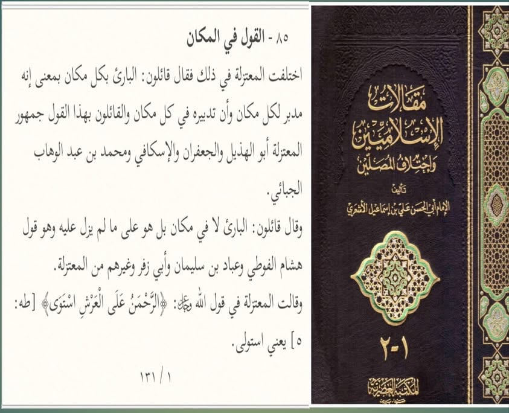

পার্থক্যটা ঠিক কোথায়?
১৩ জুলাই, ২০২৩
পার্থক্যটা ঠিক কোথায়?
কালামি ভাইদের কাছে আমরা অনেকবার যে জিনিসটা জানতে চেয়েছি, আজও তা জানতে চাচ্ছি। আশআরি-মাতুরিদি আকিদাহ আর মু'তাযিলা-জাহমিয়াদের আকিদাহর মধ্যে পার্থক্যটা ঠিক কোন যায়গায়?
প্রথমে আমরা মু'তাযিলিদের আকিদাহ সম্পর্কে জেনে নিই ইমামু আহলিসসুন্নাহ ইমাম আবুল হাসান আশআরি (মৃত্যু-৩২৪ হি.) রাহ. কিতাব থেকে। তিনি বলেন—
القول في المكان:
اختلفت المعتزلة في ذلك فقال قائلون: البارئ بكل مكان بمعنى إنه مدبر لكل مكان وأن تدبيره في كل مكان والقائلون بهذا القول جمهور المعتزلة أبو الهذيل والجعفران والإسكافي ومحمد بن عبد الوهاب الجبائي.
وقال قائلون: البارئ لا في مكان بل هو على ما لم يزل عليه وهو قول هشام الفوطي وعباد بن سليمان وأبي زفر وغيرهم من المعتزلة.
وقالت المعتزلة في قول الله ﴿الرَّحْمَنُ عَلَى الْعَرْشِ اسْتَوَى﴾ [طه: ٥] يعني استولى.
“স্থানের ব্যাপারে বক্তব্য: এ ব্যাপারে মু'তাযিলাহ সম্প্রদায় (নিজেদের মধ্যে) মতবিরোধ করেছে। তারা (কতক) বলেন— সৃষ্টিকর্তা সর্বত্র বিরাজমান। অর্থাৎ তিনি সব স্থানের পরিচালক। তার পরিচালনা সর্বত্র। এটি জমহুর মু'তাযিলা— আবুল হুজাইল, উভয় জা'ফর (জা'ফর বিন হারব ও জা'ফর বিন মুবাশ্বির) ইসকাফি, মোহাম্মদ বিন আব্দিল ওয়াহহাব আল-জুব্বায়ি'র বক্তব্য।
তারা (কতক) বলেন— সৃষ্টিকর্তা কোনো স্থানে নন; বরং তিনি যেভাবে ছিলেন, সেভাবেই আছেন। এটি হেশাম আল-ফুয়াতি, আব্বাদ বিন সুলাইমান, আবু যুফার ও অন্যান্য মু'তাযিলিদের বক্তব্য।
মু'তাযিলা সম্প্রদায় আল্লাহর বাণী— {রহমান আরশের ওপরে অধিষ্ঠান গ্রহণ করেছেন}— আয়াতের ব্যাপারে বলে, “ইস্তাওলা” তথা তিনি আরশের কর্তৃত্ব/ক্ষমতা গ্রহণ করেছেন।” [মাকালাতুল ইসলামিয়্যিন-১/১৩১]
আমাদের কালামি ভাইদের প্রশ্ন করলে আল্লাহর ব্যাপারে তারাও ঠিক একই জবাব দেন— আল্লাহ আরশের ঊর্ধ্বে নেই; বরং তিনি আগে যেখানে/যেভাবে ছিলেন, এখনো সেভাবেই আছেন। ইস্তিওয়া'র অর্থ নিয়ন্ত্রণ/কর্তৃত্ব গ্রহণ— যেটিকে খুদ ইমাম আশআরি রাহ. মু'তাযিলা সম্প্রদায়ের আকিদাহ-বিশ্বাস আখ্যা দিয়েছেন। তাহলে আশআরি-মাতুরিদিগনের আকিদাহর মাঝে আর জাহমিয়া-মু'তাযিলিদের আকিদাহর মাঝে পার্থক্যটা কোথায়?
কিছুদিন পূর্বে শাইখ হাসান সাক্কাফ যখন অকপটে স্বীকার করলেন যে, আশআরি আকিদাহ আর মু'তাযিলাহ আকিদাহ সমান। তখন আপনারা সাক্কাফের নানান সমালোচনা করলেন। তাহলে এখন ইমাম আবুল হাসান আশআরির কী সমালোচনা করবেন বা কী ট্যাগ দেবেন? অবশ্য তাঁকেও দেহবাদি ট্যাগ দিতে পারেন। যেহেতু তাঁর আকিদাহ ও আমাদের আকিদাহ হুবহু এক।
#আল_উলু
